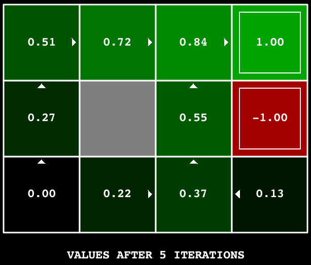
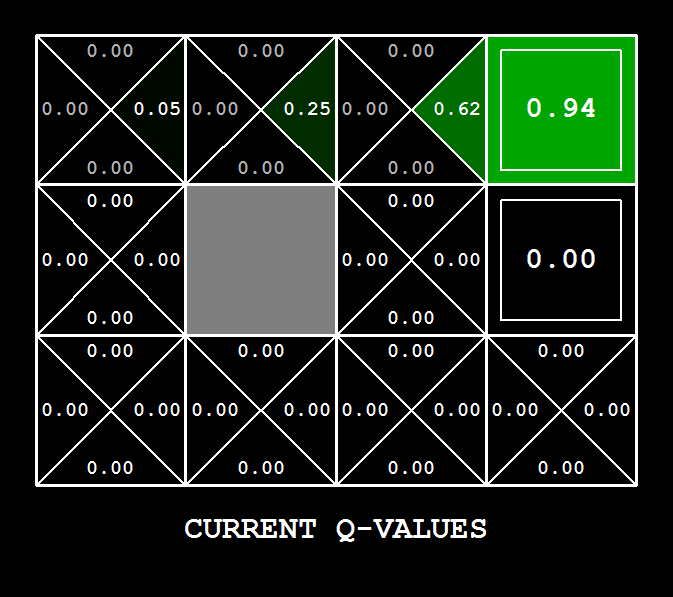

This website contains materials from a past semester. Information, assignments, and announcements may no longer be relevant. Please refer to the current semester's site for up-to-date content.
Project 3: Reinforcement Learning
Table of contents
- Introduction
- MDPs
- Question 1 (5 points): Value Iteration
- Question 2 (1 point): Bridge Crossing Analysis
- Question 3 (6 points): Policies
- Question 4 (1 points): Prioritized Sweeping Value Iteration[Extra Credit]
- Question 5 (5 points): Q-Learning
- Question 6 (2 points): Epsilon Greedy
- Question 7 (1 point): Bridge Crossing Revisited
- Question 8 (1 point): Q-Learning and Pacman
- Question 9 (4 points): Approximate Q-Learning
- Submission
Introduction
In this project, you will implement value iteration and Q-learning. You will test your agents first on Gridworld (from class), then apply them to a simulated robot controller (Crawler) and Pacman.
As in previous projects, this project includes an autograder for you to grade your solutions on your machine. This can be run on all questions with the command:
python autograder.py
It can be run for one particular question, such as q2, by:
python autograder.py -q q2
It can be run for one particular test by commands of the form:
python autograder.py -t test_cases/q2/1-bridge-grid
The code for this project contains the following files, available as a zip archive.
| Files you'll edit: | |
valueIterationAgents.py |
A value iteration agent for solving known MDPs. |
qlearningAgents.py |
Q-learning agents for Gridworld, Crawler and Pacman. |
analysis.py |
A file to put your answers to questions given in the project. |
| Files you might want to look at: | |
mdp.py |
Defines methods on general MDPs. |
learningAgents.py |
Defines the base classes ValueEstimationAgent and QLearningAgent, which your agents will extend. |
util.py |
Utilities, including util.Counter, which is particularly useful for Q-learners. |
gridworld.py |
The Gridworld implementation. |
featureExtractors.py |
Classes for extracting features on (state, action) pairs. Used for the approximate Q-learning agent (in qlearningAgents.py). |
| Supporting files you can ignore: | |
environment.py |
Abstract class for general reinforcement learning environments. Used by gridworld.py. |
graphicsGridworldDisplay.py |
Gridworld graphical display. |
graphicsUtils.py |
Graphics utilities. |
textGridworldDisplay.py |
Plug-in for the Gridworld text interface. |
crawler.py |
The crawler code and test harness. You will run this but not edit it. |
graphicsCrawlerDisplay.py |
GUI for the crawler robot. |
autograder.py |
Project autograder |
testParser.py |
Parses autograder test and solution files |
testClasses.py |
General autograding test classes |
test_cases/ |
Directory containing the test cases for each question |
reinforcementTestClasses.py |
Project 3 specific autograding test classes |
Files to Edit and Submit: You will fill in portions of valueIterationAgents.py, qlearningAgents.py, and analysis.py during the assignment. Once you have completed the assignment, you will submit these files to Gradescope (for instance, you can upload all .py files in the folder). Please do not change the other files in this distribution.
Evaluation: Your code will be autograded for technical correctness. Please do not change the names of any provided functions or classes within the code, or you will wreak havoc on the autograder. However, the correctness of your implementation – not the autograder’s judgements – will be the final judge of your score. If necessary, we will review and grade assignments individually to ensure that you receive due credit for your work.
Academic Dishonesty: We will be checking your code against other submissions in the class for logical redundancy. If you copy someone else’s code and submit it with minor changes, we will know. These cheat detectors are quite hard to fool, so please don’t try. We trust you all to submit your own work only; please don’t let us down. If you do, we will pursue the strongest consequences available to us.
Getting Help: You are not alone! If you find yourself stuck on something, contact the course staff for help. Office hours, section, and the discussion forum are there for your support; please use them. If you can’t make our office hours, let us know and we will schedule more. We want these projects to be rewarding and instructional, not frustrating and demoralizing. But, we don’t know when or how to help unless you ask.
Discussion: Please be careful not to post spoilers.
Topics needed for this project:
- MDPs I: Video 8, Note 4.1-4.2
- MDPs II: Video 9, Note 4.3-4.5
- RL I: Video 10, Note 5.1-5.3
- RL II: Video 11, Note 5.4-5.5
MDPs
To get started, run Gridworld in manual control mode, which uses the arrow keys:
python gridworld.py -m
You will see the two-exit layout from class. The blue dot is the agent. Note that when you press up, the agent only actually moves north 80% of the time. Such is the life of a Gridworld agent!
You can control many aspects of the simulation. A full list of options is available by running:
python gridworld.py -h
The default agent moves randomly
python gridworld.py -g MazeGrid
You should see the random agent bounce around the grid until it happens upon an exit. Not the finest hour for an AI agent.
Note: The Gridworld MDP is such that you first must enter a pre-terminal state (the double boxes shown in the GUI) and then take the special ‘exit’ action before the episode actually ends (in the true terminal state called TERMINAL_STATE, which is not shown in the GUI). If you run an episode manually, your total return may be less than you expected, due to the discount rate (-d to change; 0.9 by default).
Look at the console output that accompanies the graphical output (or use -t for all text). You will be told about each transition the agent experiences (to turn this off, use -q).
As in Pacman, positions are represented by (x, y) Cartesian coordinates and any arrays are indexed by [x][y], with 'north' being the direction of increasing y, etc. By default, most transitions will receive a reward of zero, though you can change this with the living reward option (-r).
Question 1 (5 points): Value Iteration
Recall the value iteration state update equation:
\[V_{k+1}(s) \leftarrow \max_a \sum_{s'} T(s,a,s')\left[R(s,a,s') + \gamma V_k(s')\right]\]Write a value iteration agent in ValueIterationAgent, which has been partially specified for you in valueIterationAgents.py. Your value iteration agent is an offline planner, not a reinforcement learning agent, and so the relevant training option is the number of iterations of value iteration it should run (option -i) in its initial planning phase. ValueIterationAgent takes an MDP on construction and runs value iteration for the specified number of iterations before the constructor returns.
Value iteration computes \(k\)-step estimates of the optimal values, \(V_k\). In addition to runValueIteration, implement the following methods for ValueIterationAgent using \(V_k\):
computeActionFromValues(state)computes the best action according to the value function given by self.values.computeQValueFromValues(state, action)returns the Q-value of the (state, action) pair given by the value function given byself.values.
These quantities are all displayed in the GUI: values are numbers in squares, Q-values are numbers in square quarters, and policies are arrows out from each square.
Important: Use the “batch” version of value iteration where each vector \(V_k\) is computed from a fixed vector \(V_{k−1}\) (like in lecture), not the “online” version where one single weight vector is updated in place. This means that when a state’s value is updated in iteration \(k\) based on the values of its successor states, the successor state values used in the value update computation should be those from iteration \(k−1\) (even if some of the successor states had already been updated in iteration \(k\)). The difference is discussed in Sutton & Barto in Chapter 4.1 on page 91.
Note: A policy synthesized from values of depth \(k\) (which reflect the next \(k\) rewards) will actually reflect the next \(k+1\) rewards (i.e. you return \(\pi_{k+1}\)). Similarly, the Q-values will also reflect one more reward than the values (i.e. you return \(Q_{k+1}\)).
You should return the synthesized policy \(\pi_{k+1}\).
Hint: You may optionally use the util.Counter class in util.py, which is a dictionary with a default value of zero. However, be careful with argMax: the actual argmax you want may be a key not in the counter!
Note: Make sure to handle the case when a state has no available actions in an MDP (think about what this means for future rewards).
To test your implementation, run the autograder:
python autograder.py -q q1
The following command loads your ValueIterationAgent, which will compute a policy and execute it 10 times. Press a key to cycle through values, Q-values, and the simulation. You should find that the value of the start state (V(start), which you can read off of the GUI) and the empirical resulting average reward (printed after the 10 rounds of execution finish) are quite close.
python gridworld.py -a value -i 100 -k 10
Hint: On the default BookGrid, running value iteration for 5 iterations should give you this output:
python gridworld.py -a value -i 5

Grading: Your value iteration agent will be graded on a new grid. We will check your values, Q-values, and policies after fixed numbers of iterations and at convergence (e.g. after 100 iterations).
Question 2 (1 point): Bridge Crossing Analysis
BridgeGrid is a grid world map with the a low-reward terminal state and a high-reward terminal state separated by a narrow “bridge”, on either side of which is a chasm of high negative reward. The agent starts near the low-reward state. With the default discount of 0.9 and the default noise of 0.2, the optimal policy does not cross the bridge. Change only ONE of the discount and noise parameters so that the optimal policy causes the agent to attempt to cross the bridge. Put your answer in question2() of analysis.py. (Noise refers to how often an agent ends up in an unintended successor state when they perform an action.) The default corresponds to:
python gridworld.py -a value -i 100 -g BridgeGrid --discount 0.9 --noise 0.2

Grading: We will check that you only changed one of the given parameters, and that with this change, a correct value iteration agent should cross the bridge. To check your answer, run the autograder:
python autograder.py -q q2
Question 3 (6 points): Policies
Consider the DiscountGrid layout, shown below. This grid has two terminal states with positive payoff (in the middle row), a close exit with payoff +1 and a distant exit with payoff +10. The bottom row of the grid consists of terminal states with negative payoff (shown in red); each state in this “cliff” region has payoff -10. The starting state is the yellow square. We distinguish between two types of paths: (1) paths that “risk the cliff” and travel near the bottom row of the grid; these paths are shorter but risk earning a large negative payoff, and are represented by the red arrow in the figure below. (2) paths that “avoid the cliff” and travel along the top edge of the grid. These paths are longer but are less likely to incur huge negative payoffs. These paths are represented by the green arrow in the figure below.

In this question, you will choose settings of the discount, noise, and living reward parameters for this MDP to produce optimal policies of several different types. Your setting of the parameter values for each part should have the property that, if your agent followed its optimal policy without being subject to any noise, it would exhibit the given behavior. If a particular behavior is not achieved for any setting of the parameters, assert that the policy is impossible by returning the string 'NOT POSSIBLE'.
Here are the optimal policy types you should attempt to produce:
- Prefer the close exit (+1), risking the cliff (-10)
- Prefer the close exit (+1), but avoiding the cliff (-10)
- Prefer the distant exit (+10), risking the cliff (-10)
- Prefer the distant exit (+10), avoiding the cliff (-10)
- Avoid both exits and the cliff (so an episode should never terminate)
To see what behavior a set of numbers ends up in, run the following command to see a GUI:
python gridworld.py -g DiscountGrid -a value --discount [YOUR_DISCOUNT] --noise [YOUR_NOISE] --livingReward [YOUR_LIVING_REWARD]
To check your answers, run the autograder:
python autograder.py -q q3
question3a() through question3e() should each return a 3-item tuple of (discount, noise, living reward) in analysis.py.
Note: You can check your policies in the GUI. For example, using a correct answer to 3(a), the arrow in (0,1) should point east, the arrow in (1,1) should also point east, and the arrow in (2,1) should point north.
Note: On some machines you may not see an arrow. In this case, press a button on the keyboard to switch to qValue display, and mentally calculate the policy by taking the arg max of the available qValues for each state.
Grading: We will check that the desired policy is returned in each case.
Question 4 (1 points): Prioritized Sweeping Value Iteration[Extra Credit]
This question is extra credit. We plan to prioritize students who have questions regarding required portions of this project in Office Hours.
You will now implement PrioritizedSweepingValueIterationAgent, which has been partially specified for you in valueIterationAgents.py.
Prioritized sweeping attempts to focus updates of state values in ways that are likely to change the policy.
For this project, you will implement a simplified version of the standard prioritized sweeping algorithm, which is described in this paper. We’ve adapted this algorithm for our setting. First, we define the predecessors of a state s as all states that have a nonzero probability of reaching s by taking some action a. Also, theta, which is passed in as a parameter, will represent our tolerance for error when deciding whether to update the value of a state. Here’s the algorithm you should follow in your implementation.
- Compute predecessors of all states.
- Initialize an empty priority queue.
- For each non-terminal state
s, do: (note: to make the autograder work for this question, you must iterate over states in the order returned byself.mdp.getStates())- Find the absolute value of the difference between the current value of
sinself.valuesand the highest Q-value across all possible actions froms(this represents what the value should be); call this numberdiff. Do NOT updateself.values[s]in this step. - Push
sinto the priority queue with priority-diff(note that this is negative). We use a negative because the priority queue is a min heap, but we want to prioritize updating states that have a higher error.
- Find the absolute value of the difference between the current value of
- For
iterationin0, 1, 2, ..., self.iterations - 1, do:- If the priority queue is empty, then terminate.
- Pop a state
soff the priority queue. - Update the value of
s(if it is not a terminal state) inself.values. - For each predecessor
pofs, do:- Find the absolute value of the difference between the current value of
pinself.valuesand the highest Q-value across all possible actions fromp(this represents what the value should be); call this numberdiff. Do NOT updateself.values[p]in this step. - If
diff > theta, pushpinto the priority queue with priority-diff(note that this is negative), as long as it does not already exist in the priority queue with equal or lower priority. As before, we use a negative because the priority queue is a min heap, but we want to prioritize updating states that have a higher error.
- Find the absolute value of the difference between the current value of
A couple of important notes on implementation:
- When you compute predecessors of a state, make sure to store them in a set, not a list, to avoid duplicates.
- Please use
util.PriorityQueuein your implementation. Theupdatemethod in this class will likely be useful; look at its documentation.
To test your implementation, run the autograder. It should take about 1 second to run. If it takes much longer, you may run into issues later in the project, so make your implementation more efficient now.
python autograder.py -q q4
You can run the PrioritizedSweepingValueIterationAgen in the Gridworld using the following command.
python gridworld.py -a priosweepvalue -i 1000
Grading: Your prioritized sweeping value iteration agent will be graded on a new grid. We will check your values, Q-values, and policies after fixed numbers of iterations and at convergence (e.g., after 1000 iterations).
Question 5 (5 points): Q-Learning
Note that your value iteration agent does not actually learn from experience. Rather, it ponders its MDP model to arrive at a complete policy before ever interacting with a real environment. When it does interact with the environment, it simply follows the precomputed policy (e.g. it becomes a reflex agent). This distinction may be subtle in a simulated environment like a Gridword, but it’s very important in the real world, where the real MDP is not available.
You will now write a Q-learning agent, which does very little on construction, but instead learns by trial and error from interactions with the environment through its update(state, action, nextState, reward) method. A stub of a Q-learner is specified in QLearningAgent in qlearningAgents.py, and you can select it with the option '-a q'. For this question, you must implement the update, computeValueFromQValues, getQValue, and computeActionFromQValues methods.
Note: For computeActionFromQValues, you should break ties randomly for better behavior. The random.choice() function will help. In a particular state, actions that your agent hasn’t seen before still have a Q-value, specifically a Q-value of zero, and if all of the actions that your agent has seen before have a negative Q-value, an unseen action may be optimal.
Important: Make sure that in your computeValueFromQValues and computeActionFromQValues functions, you only access Q values by calling getQValue. This abstraction will be useful for question 9 when you override getQValue to use features of state-action pairs rather than state-action pairs directly.
With the Q-learning update in place, you can watch your Q-learner learn under manual control, using the keyboard:
python gridworld.py -a q -k 5 -m
Recall that -k will control the number of episodes your agent gets to learn. Watch how the agent learns about the state it was just in, not the one it moves to, and “leaves learning in its wake.” Hint: to help with debugging, you can turn off noise by using the --noise 0.0 parameter (though this obviously makes Q-learning less interesting). If you manually steer Pacman north and then east along the optimal path for four episodes, you should see the following Q-values:

Grading: We will run your Q-learning agent and check that it learns the same Q-values and policy as our reference implementation when each is presented with the same set of examples. To grade your implementation, run the autograder:
python autograder.py -q q5
Question 6 (2 points): Epsilon Greedy
Complete your Q-learning agent by implementing epsilon-greedy action selection in getAction, meaning it chooses random actions an epsilon fraction of the time, and follows its current best Q-values otherwise. Note that choosing a random action may result in choosing the best action - that is, you should not choose a random sub-optimal action, but rather any random legal action.
You can choose an element from a list uniformly at random by calling the random.choice function. You can simulate a binary variable with probability p of success by using util.flipCoin(p), which returns True with probability p and False with probability 1-p.
After implementing the getAction method, observe the following behavior of the agent in GridWorld (with epsilon = 0.3).
python gridworld.py -a q -k 100
Your final Q-values should resemble those of your value iteration agent, especially along well-traveled paths. However, your average returns will be lower than the Q-values predict because of the random actions and the initial learning phase.
You can also observe the following simulations for different epsilon values. Does that behavior of the agent match what you expect?
python gridworld.py -a q -k 100 --noise 0.0 -e 0.1
python gridworld.py -a q -k 100 --noise 0.0 -e 0.9
To test your implementation, run the autograder:
python autograder.py -q q6
With no additional code, you should now be able to run a Q-learning crawler robot:
python crawler.py
If this doesn’t work, you’ve probably written some code too specific to the GridWorld problem and you should make it more general to all MDPs.
This will invoke the crawling robot from class using your Q-learner. Play around with the various learning parameters to see how they affect the agent’s policies and actions. Note that the step delay is a parameter of the simulation, whereas the learning rate and epsilon are parameters of your learning algorithm, and the discount factor is a property of the environment.
Question 7 (1 point): Bridge Crossing Revisited
First, train a completely random Q-learner with the default learning rate on the noiseless BridgeGrid for 50 episodes and observe whether it finds the optimal policy.
python gridworld.py -a q -k 50 -n 0 -g BridgeGrid -e 1
Now try the same experiment with an epsilon of 0. Is there an epsilon and a learning rate for which it is highly likely (greater than 99%) that the optimal policy will be learned after 50 iterations? question8() in analysis.py should return EITHER a 2-item tuple of (epsilon, learning rate) OR the string 'NOT POSSIBLE' if there is none. Epsilon is controlled by -e, learning rate by -l.
Note: Your response should be not depend on the exact tie-breaking mechanism used to choose actions. This means your answer should be correct even if for instance we rotated the entire bridge grid world 90 degrees.
To grade your answer, run the autograder:
python autograder.py -q q7
Question 8 (1 point): Q-Learning and Pacman
Time to play some Pacman! Pacman will play games in two phases. In the first phase, training, Pacman will begin to learn about the values of positions and actions. Because it takes a very long time to learn accurate Q-values even for tiny grids, Pacman’s training games run in quiet mode by default, with no GUI (or console) display. Once Pacman’s training is complete, he will enter testing mode. When testing, Pacman’s self.epsilon and self.alpha will be set to 0.0, effectively stopping Q-learning and disabling exploration, in order to allow Pacman to exploit his learned policy. Test games are shown in the GUI by default. Without any code changes you should be able to run Q-learning Pacman for very tiny grids as follows:
python pacman.py -p PacmanQAgent -x 2000 -n 2010 -l smallGrid
Note that PacmanQAgent is already defined for you in terms of the QLearningAgent you’ve already written. PacmanQAgent is only different in that it has default learning parameters that are more effective for the Pacman problem (epsilon=0.05, alpha=0.2, gamma=0.8). You will receive full credit for this question if the command above works without exceptions and your agent wins at least 80% of the time. The autograder will run 100 test games after the 2000 training games.
Hint: If your QLearningAgent works for gridworld.py and crawler.py but does not seem to be learning a good policy for Pacman on smallGrid, it may be because your getAction and/or computeActionFromQValues methods do not in some cases properly consider unseen actions. In particular, because unseen actions have by definition a Q-value of zero, if all of the actions that have been seen have negative Q-values, an unseen action may be optimal. Beware of the argMax function from util.Counter!
To grade your answer, run:
python autograder.py -q q8
Note: If you want to experiment with learning parameters, you can use the option -a, for example -a epsilon=0.1,alpha=0.3,gamma=0.7. These values will then be accessible as self.epsilon, self.gamma and self.alpha inside the agent.
Note: While a total of 2010 games will be played, the first 2000 games will not be displayed because of the option -x 2000, which designates the first 2000 games for training (no output). Thus, you will only see Pacman play the last 10 of these games. The number of training games is also passed to your agent as the option numTraining.
Note: If you want to watch 10 training games to see what’s going on, use the command:
python pacman.py -p PacmanQAgent -n 10 -l smallGrid -a numTraining=10
During training, you will see output every 100 games with statistics about how Pacman is faring. Epsilon is positive during training, so Pacman will play poorly even after having learned a good policy: this is because he occasionally makes a random exploratory move into a ghost. As a benchmark, it should take between 1000 and 1400 games before Pacman’s rewards for a 100 episode segment becomes positive, reflecting that he’s started winning more than losing. By the end of training, it should remain positive and be fairly high (between 100 and 350).
Make sure you understand what is happening here: the MDP state is the exact board configuration facing Pacman, with the now complex transitions describing an entire ply of change to that state. The intermediate game configurations in which Pacman has moved but the ghosts have not replied are not MDP states, but are bundled in to the transitions.
Once Pacman is done training, he should win very reliably in test games (at least 90% of the time), since now he is exploiting his learned policy.
However, you will find that training the same agent on the seemingly simple mediumGrid does not work well. In our implementation, Pacman’s average training rewards remain negative throughout training. At test time, he plays badly, probably losing all of his test games. Training will also take a long time, despite its ineffectiveness.
Pacman fails to win on larger layouts because each board configuration is a separate state with separate Q-values. He has no way to generalize that running into a ghost is bad for all positions. Obviously, this approach will not scale.
Question 9 (4 points): Approximate Q-Learning
Implement an approximate Q-learning agent that learns weights for features of states, where many states might share the same features. Write your implementation in ApproximateQAgent class in qlearningAgents.py, which is a subclass of PacmanQAgent.
Note: Approximate Q-learning assumes the existence of a feature function \(f(s,a)\) over state and action pairs, which yields a vector \([f_1(s,a), \dots, f_i(s,a), \dots, f_n(s,a)]\) of feature values. We provide feature functions for you in featureExtractors.py. Feature vectors are util.Counter (like a dictionary) objects containing the non-zero pairs of features and values; all omitted features have value zero. So, instead of an vector where the index in the vector defines which feature is which, we have the keys in the dictionary define the idenity of the feature.
The approximate Q-function takes the following form:
\[Q(s,a)=\sum_{i=1}^n f_i(s,a) w_i\]where each weight \(w_i\) is associated with a particular feature \(f_i(s,a)\). In your code, you should implement the weight vector as a dictionary mapping features (which the feature extractors will return) to weight values. You will update your weight vectors similarly to how you updated Q-values:
\[w_i \leftarrow w_i + \alpha \cdot \text{difference} \cdot f_i(s,a)\] \[\text{difference} = \left( r + \gamma \max_{a'}Q(s',a') \right) - Q(s,a)\]Note that the \(\text{difference}\) term is the same as in normal Q-learning, and \(r\) is the experienced reward.
By default, ApproximateQAgent uses the IdentityExtractor, which assigns a single feature to every (state,action) pair. With this feature extractor, your approximate Q-learning agent should work identically to PacmanQAgent. You can test this with the following command:
python pacman.py -p ApproximateQAgent -x 2000 -n 2010 -l smallGrid
Important: ApproximateQAgent is a subclass of QLearningAgent, and it therefore shares several methods like getAction. Make sure that your methods in QLearningAgent call getQValue instead of accessing Q-values directly, so that when you override getQValue in your approximate agent, the new approximate q-values are used to compute actions.
Once you’re confident that your approximate learner works correctly with the identity features, run your approximate Q-learning agent with our custom feature extractor, which can learn to win with ease:
python pacman.py -p ApproximateQAgent -a extractor=SimpleExtractor -x 50 -n 60 -l mediumGrid
Even much larger layouts should be no problem for your ApproximateQAgent (warning: this may take a few minutes to train):
python pacman.py -p ApproximateQAgent -a extractor=SimpleExtractor -x 50 -n 60 -l mediumClassic
If you have no errors, your approximate Q-learning agent should win almost every time with these simple features, even with only 50 training games.
Grading: We will run your approximate Q-learning agent and check that it learns the same Q-values and feature weights as our reference implementation when each is presented with the same set of examples. To grade your implementation, run the autograder:
python autograder.py -q q9
Congratulations! You have a learning Pacman agent!
Submission
In order to submit your project upload the Python files you edited. For instance, use Gradescope’s upload on all .py files in the project folder.